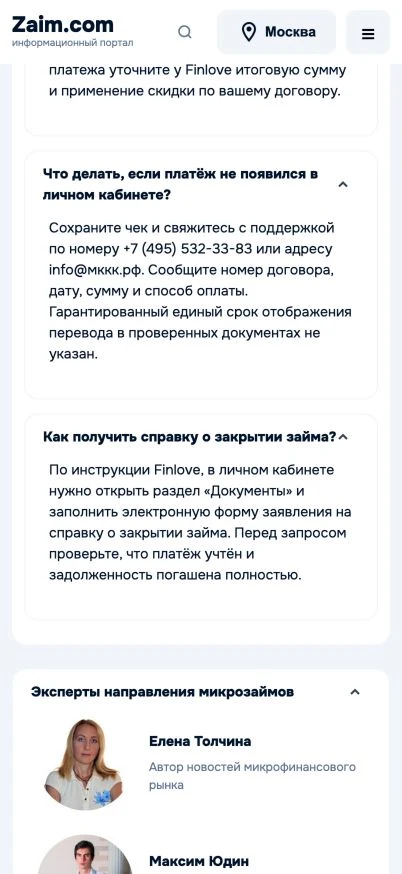

Сравнение условий займа
В каталоге человек сравнивает сумму, срок и стоимость займа. Карточка кредитора даёт подробные условия и отзывы перед переходом к предложению. На примере Finlove видно, как различаются условия первого и повторного займа.



Почему условия разделены
Один кредитор может предложить разные сроки и стоимость для первого и повторного займа. Поэтому в карточке эти сценарии показаны отдельно. Условия можно сверить перед переходом к заявке.
Как я бы анализировал продукт
Понятно ли человеку, какие условия относятся к нему
Что проверить в карточке
Показал бы несколько карточек людям, которые берут заём впервые, и тем, кто уже пользовался этим кредитором. В каждом случае попросил бы назвать подходящие сумму, срок и стоимость, а затем найти, где подать заявку. Доля участников, которые правильно назвали условия своего сценария, покажет, где карточка путает два предложения.
Что смотреть после изменения
Сравнил бы два способа показать условия на карточке. Если кредитор передаёт статус заявки, основная метрика — доля посетителей карточки с принятой к рассмотрению заявкой. При наличии только кликов отдельно проверил бы, выросла ли понятность условий в тесте. Клик в таком случае показывает переход к кредитору.